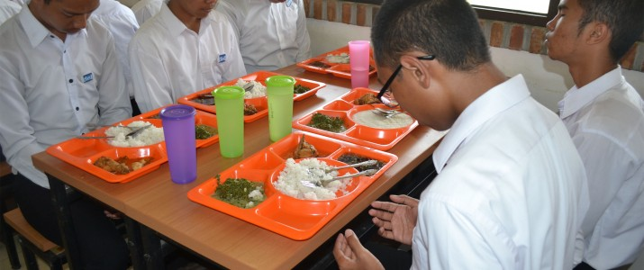
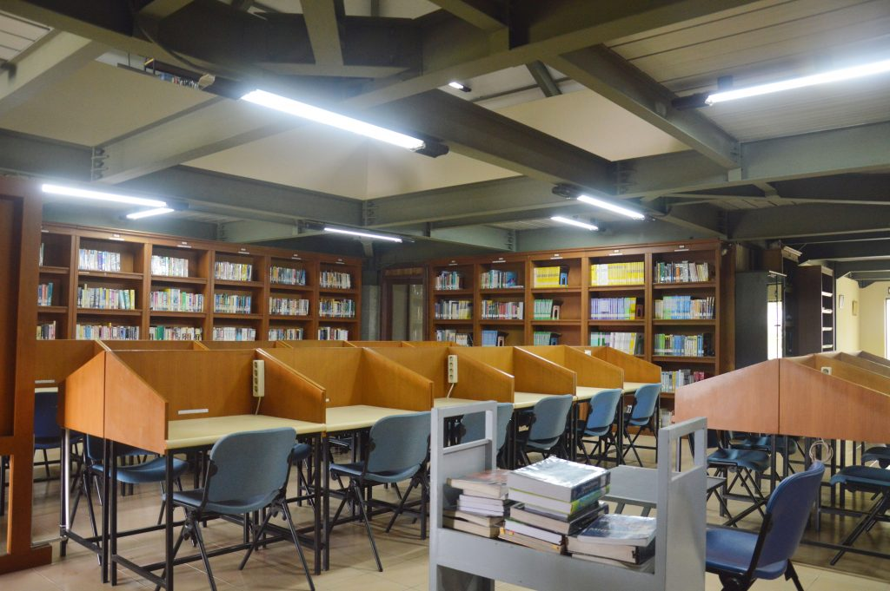

Fasilitas
Tanggal/Waktu:Tambah Fasilitas
Daftar Fasilitas
| No | Gambar | Nama Fasilitas | Deskripsi Fasilitas | Aksi |
|---|---|---|---|---|
| 1 | Laboratorium | Definisi Laboratorium Komputasi adalah ruangan yang dilabeli sebagai
laboratorium komputasi
yang berisi sekumpulan perangkat yang terdiri atas Komputer Desktop,
Laptop, AC, projector,
printer, dan perangkat lain sesuai dengan kebutuhan dari laboratorium
yang dimaksud Fasilitas laboratorium komputasi dimaksudkan sebagai sarana kerja, pendidikan, penelitian maupun pengabdian pada masyarakat. Kepada para pengguna diharapkan pengertian dan kesadarannya untuk menjaga keutuhan dan keamanan peralatan yang ada, serta berperan dalam menciptakan suasana akademik yang lebih berhasil guna. Kesadaran ini hendaknya diterapkan terhadap semua peralatan sarana dan prasarana yang dimiliki oleh Institut Teknologi Del dan semua sistem komputasi lain yang dapat diakses melalui jaringan komunikasi yang tersedia. |
||
| 2 |  |
Akomodasi | Akomodasi Dosen Institut Teknologi Del (IT Del) menyediakan fasilitas perumahan untuk dosen dan staf penunjang di lingkungan kampus. Dengan tinggal di lingkungan kampus, seluruh dosen dan staf bisa memberikan kontribusi terbaik untuk kelancaran dan kualitas proses akademis dan non-akademis di IT Del. Dengan lingkungan dan fasilitas yang ergonomis, diharapkan juga dosen bisa mengembangkan diri secara lebih maksimal. Beberapa tipe perumahan yang tersedia untuk dosen dan staf (setiap bangunan di beri gambar): 1. Rumah Dosen (RD), terdiri dari 8 unit rumah yang fully-furnished, diperuntukkan untuk dosen yang sudah berkeluarga. 2. Mansionette, merupakan bangunan dua lantai terdiri dari 7 two bedroom fully-furnished flat, diperuntukkan untuk dosen/staf yang sudah berkeluarga. 3. Town House, terdiri dari 8 unit fully-furnished town house, diperuntukkan untuk dosen yang sudah berkeluarga. 4. Studio, merupakan self-contained one-bedroom unit, yang diperuntukkan untuk dosen/staf yang belum menikah. |
|
| 3 |  | Kantin | Kantin Politeknik Informatika Del menyediakan menu makanan yang bergizi
dan sehat untuk
semua mahasiswa/i. Menu yang disediakan selalu memenuhi standard gizi,
sehingga mahasiswa
bisa melaksanakan aktifitas perkuliahan dengan sehat dan prima. Setiap
mahasiswa diwajibkan
untuk makan di kantin tiga kali setiap harinya. Untuk Sabtu sore dan hari Minggu, layanan kantin untuk mahasiswa ditiadakan, dimana untuk waktu tersebut, mahasiswa diperbolehkan keluar kampus (termasuk ijin bermalam) untuk makan. Dalam pelaksanaan makan, mahasiswa dilatih juga untuk memiliki manner. Etika makan yang berlaku adalah sebagai berikut: a. Mahasiswa berpakaian rapi dan bersih. b. Mengikuti tata cara makan yang baik (table manner): c. Menggunakan sendok dan garpu. d. Mulut tertutup rapat pada saat mengunyah makanan. e. Tidak menimbulkan bunyi dari peralatan makan. f. Berbicara sewajarnya ( tidak terlalu keras sehingga tidak mengganggu orang lain). g. Mengambil makanan secukupnya dan menghabiskannya tanpa sisa. |
|
| 4 |  | Perpustakaan | Perpustakaan Politeknik Informatika Del (PI Del) berdiri sejak tanggal 9
Januari 2002 dengan
sistem pelayanan open acces (terbuka). Selanjutnya berubah nama seiring
dengan berubahnya
status Politeknik menjadi Institut sejak tahun 2013. Perpustakaan
berganti nama menjadi
Perpustakaan Institut Teknologi Del. Perpustakaan Institut Teknologi Del
memiliki fungsi
utama yaitu fungsi pendidikan. Pengadaan koleksi dan pengembangan minat
baca internal dan
eksternal Institut Teknologi Del dilakukan sebagai bagian dari kegiatan
diseminasi kegiatan
peningkatan minat baca. Perpustakaan IT Del memiliki visi yaitu “Sebagai pusat informasi terkemuka yang menyediakan layanan informasi cetak maupun cetak dan juga penyedia layanan informasi berteknologi tinggi. Untuk mencapai visi dimaksud, misi yang diemban oleh Perpustakaan IT Del adalah sebagai berikut: Menyediakan layanan pustaka yang mendukung program-program akademik dan non akademik. Memberikan layanan informasi cetak maupun non cetak bagi seluruh civitas akademika PI Del maupun kepada masyarakat umum. Meningkatkan cara dan proses diseminasi koleksi lebih efisien dan efektif. Meningkatkan keragaman koleksi demi peningkatan mutu layanan |